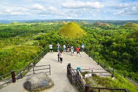
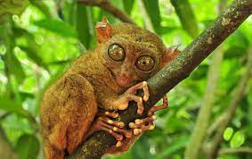
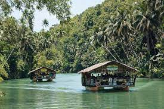

Bohol

Bohol (Tagalog pronunciation: [bɔˈhɔl]), officially the Province of Bohol (Cebuano: Lalawigan sa Bohol; Tagalog:
Lalawigan ng Bohol), is an island province of the Philippines located in the Central Visayas region, consisting of
the island itself and 75 minor surrounding islands.[5] Its capital is Tagbilaran. With a land area of 4,821 km2 (1,861 sq mi)
and a coastline 261 km (162 mi) long, Bohol is the tenth largest island of the Philippines.
The province of Bohol is a first-class province divided into 3 congressional districts, comprising 1 component city and 47 municipalities.[7] It has 1,109 barangays.

The province is a popular tourist destination with its beaches and resorts.[9] The Chocolate Hills, numerous mounds of brown-colored limestone
formations, are the most popular attraction. The formations can be seen by land (climbing the highest point) or by air via ultralight air tours.
Panglao Island, located just southwest of Tagbilaran, is famous for its diving locations and is routinely listed as one of the top ten diving
locations in the world. Numerous tourist resorts and dive centers dot the southern beaches. The Philippine tarsier, amongst the world's smallest
primates, is indigenous to the island.
It was the home province of Carlos P. Garcia, the eighth president of the Republic of the Philippines (1957–1961) who was born in Talibon, Bohol.
On 15 October 2013, Bohol was devastated by a 7.2 magnitude earthquake whose epicenter was 6 km (3.7 mi) south of Sagbayan town. The earthquake, which also hit southern Cebu,
claimed 156 lives altogether and injured 374 people. It also destroyed or damaged a number of Bohol's heritage churches.
In 2017, the provincial government began initiating the nomination of the entire province to the UNESCO Global Geoparks Network.
In 1667, Father Francisco Combes, in his Historia de Mindanao, mentioned that at one time in their history, the people of the island of Panglao invaded mainland
Bohol and subsequently imposing their economic and political dominance in the area. They considered the previous inhabitants of the islands as their slaves by
reason of war, as witnessed for example by how Datu Pagbuaya, one of the rulers of Panglao, considered Datu Sikatuna as his vassal and relative.[15] The invasion
of mainland Bohol by the people of Panglao ushered the birth of the so-called Bohol "kingdom", also known as the "Dapitan Kingdom of Bohol". The Bohol "kingdom" prospered
under the reign of the two brother rulers of Panglao - Datu Dailisan and Datu Pagbuaya, with trade links established with neighbouring Southeast Asian countries, particularly
with the Sultanate of Ternate. The flourishing of trade in the Bohol "kingdom" is owed to its strategic location along the busy trading channels of Cebu and Butuan. For other
countries such as Ternate to gain access to the busy trade ports of the Visayas, they need to first forge diplomatic ties with the Bohol "kingdom".
